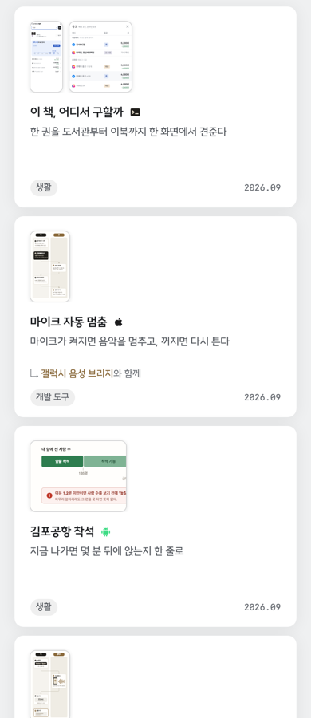
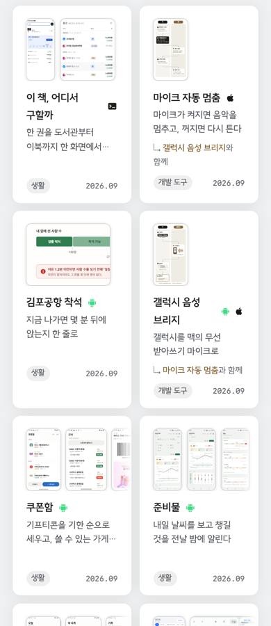
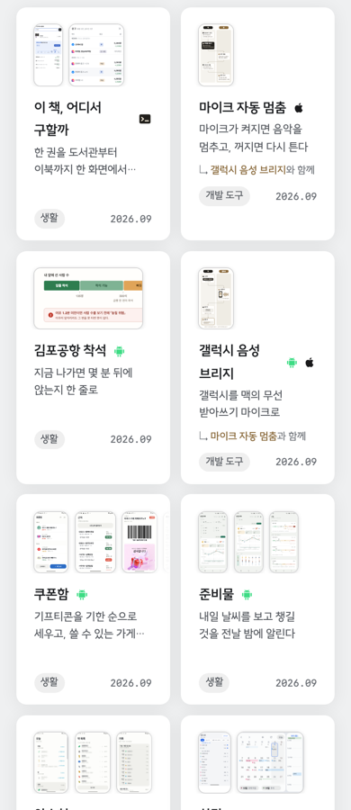
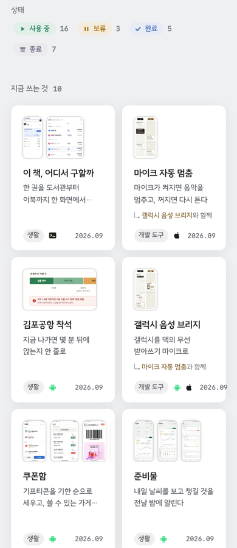

폰 폭 390px 에서 지금은 한 열이다. 카드 오른쪽 3분의 2가 비고 한 화면에 세 장만 선다.
네 판 모두 실제 사이트를 390px 로 띄워 같은 자리에서 찍었다. 견주기 좋게 네 판을 나란히 놓느라 그림만 340px 로 줄였다.
지금 — 한 열
썸네일이 왼쪽에만 서고 오른쪽이 빈다. 한 화면에 세 장.

얻는 것 제목이 한 줄에 다 들어간다. 잃는 것 카드 넓이의 3분의 2가 빈 자리다.
두 열 — 그대로
열만 둘로 늘린 판. 한 화면에 여섯 장.

걸리는 것 「함께」 줄이 두 줄로 접히면 그 카드만 길어져, 갈래 칩과 날짜가 옆 카드와 다른 높이에 선다.
두 열 — 아래 줄을 바닥에
위와 같고, 갈래 칩과 날짜만 카드 바닥에 붙인다.
되는 것 「함께」 줄이 접혀도 아래 줄이 한 높이에 선다. 썸네일 크기는 그대로라 화면이 읽힌다.
두 열 — 썸네일도 줄여← 정함
썸네일을 5.5rem 에서 4.2rem 으로 줄이고 글자도 한 단 낮춘 판.

정한 판 바닥 정렬과 함께 넣었다. 쿠폰함처럼 화면 세 장이 든 썸네일이 작아지는 것은 알고 고른 쪽이다 — 한 화면에 여섯 장이 서는 쪽을 택했다.
| 판 | 열 | 카드 폭 | 카드 높이 | 한 화면에 | 가로 넘침 | 아래 줄 |
|---|---|---|---|---|---|---|
| 지금 — 한 열 | 1 | 355px | 252px | 3장 | 0 | 맞음 |
| 두 열 — 그대로 | 2 | 172px | 284px | 6장 | 0 | 어긋남 |
| 두 열 — 바닥에 | 2 | 172px | 288px | 6장 | 0 | 맞음 |
| 두 열 — 썸네일도 | 2 | 171px | 259px | 6장 | 0 | 어긋남 |
네 판을 견줄 때 쓴 그림은 모두 CSS 를 덧대 흉내 낸 것이고, 이것은 실제로 넣고 다시 찍은 화면이다.

달라진 것 플랫폼 아이콘이 갈래 칩 옆에 서고, 제목은 한 줄에 들어가며, 아래 줄이 옆 카드와 한 높이다.
두 열로 좁히자 한 열에서는 안 보이던 자리가 넷 드러났다. 모두 「그 카드만 한 줄 높아져 옆 카드와 어긋난다」는 같은 증상이었고, 하나씩 재서 막았다.
| 드러난 것 | 왜 | 막은 법 |
|---|---|---|
| 한 열이 두 군데서 걸려 있었다 | 34rem 규칙을 640px 규칙이 덮고 있어 34rem 쪽은 죽은 줄이었다 | 둘 다 걷어 52rem 의 두 열이 이어지게 |
| 플랫폼 아이콘이 홀로 뜬다 | 제목 줄에 두면 제목이 접히거나(flex) 아이콘만 다음 줄로 떨어진다(block) | 제목 줄에서 떼어 갈래 칩 옆으로 |
| 날짜가 다음 줄로 내려간다 | 아래 줄이 접혀 그 카드만 두 배 높아졌다 | flex-wrap: nowrap |
| 갈래 칩 글자가 접힌다 | 「개발 도구」가 두 어절이라 172px 에서 두 줄이 됐다 | white-space: nowrap |
/* 폭과 무관하게 — 아래 줄을 카드 바닥에 */
.card .body { display: flex; flex-direction: column; flex: 1; }
.card .body .mt{ margin-top: auto; padding-top: 0.75rem; }
.card .mt { flex-wrap: nowrap; }
.card .chip-g { white-space: nowrap; }
/* 폰 두 열 — 칸이 172px 이라 화면과 글자를 한 단 낮춘다 */
@media (max-width: 640px) {
.card .shotrow { min-height: calc(4.2rem + 6px); }
.card .shotrow-i img{ height: 4.2rem; }
.card .ds { font-size: 0.8rem; }
.card .card-with { font-size: 0.72rem; }
}
다섯 폭(390 · 560 · 900 · 1100 · 1560)에서 줄마다 아래 줄 높이가 한 값이고 가로 넘침은 0 이다.